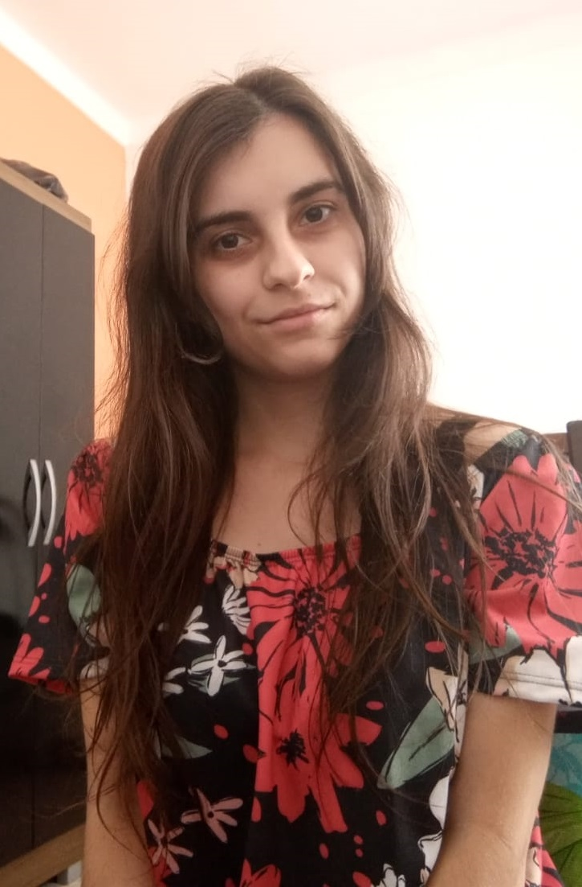

- Home
- >
- Currículo
Currículo
Dados Pessoais

Nome:
Mariana Siano Pinto
Data de Nascimento:
15/04/1997
Residência:
Juiz de Fora, Brasil
Idiomas:
Português (Nativo)
Espanhol (Básico)
Sobre Mim
Simpática, gosto muito de aprender coisas novas e sempre ir melhorando.
Nascida em Juiz de Fora/MG, formada em Técnico em Logística a nível médio pelo Senac Minas de Pouso Alegre, sul do estado.
Morei por dois anos em Boa Vista, Roraima, onde fiz curso de Informática Avançada pelo Senac antes de começar a cursar o Ensino Superior.
Em 2017, voltei para Juiz de Fora/MG, cidade natal, onde comecei fazer a faculdade.
Atualmente, granduanda em Bacharel de Ciência da Computação na Universidade Federal de Juiz de Fora (UFJF).
Educação
Fevereiro/2017-Em andamento
Ciência da Computação/Graduação/UFJF
Maio/2016-Junho/2016
Informática Básica/Curso/Senac Roraima
Agosto/2013-Dezembro/2014
Logística/Técnico/Senac Minas
Habilidades
Comunicar
Boa comunicação / Atenciosa
Outros
Autocofiança / Capacidade de adaptação
Experiência de Trabalho
Outubro/2021-atualmente
Treinee - Code Jr. de Computação - Universidade Federal de Juiz de Fora (UFJF)
Abril/2019-Julho/2020
Voluntária Iniciação Cientifica - Departamento de Ciência da Computação (DCC) - Universidade Federal de Juiz de Fora (UFJF)
Contato
marianasiano.mariana@hotmail.com
+55 32 99145-7238
← Voltar ao início